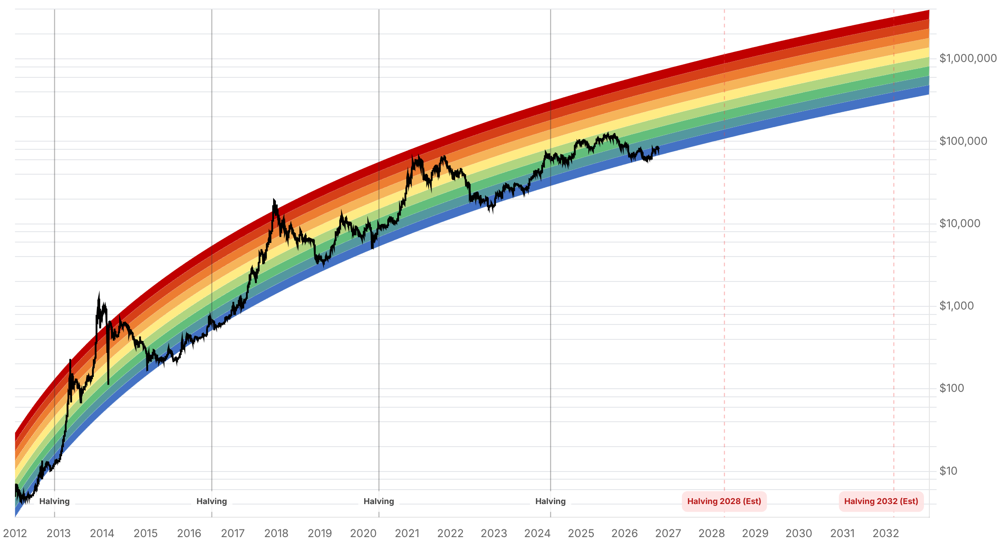

Reporte financiero
BTC cotiza en USD 83.391,93 en vivo (07:22 UTC), +0,36% frente al cierre de ayer (USD 83.092,65) -una sesión tranquila comparada con la volatilidad de ayer, cuando el precio testeó el soporte de USD 81.000 antes de rebotar-. La novedad más relevante desde el reporte de ayer es que los ETF spot de Bitcoin en EE.UU. revirtieron a entradas netas el 13 de octubre (+USD 175,7M según Farside, liderado por FBTC con USD 103,1M e IBIT con USD 65,9M), cortando la racha de salidas que había marcado la semana previa (incluida la salida semanal de -USD 680M aprox. reportada ayer) -aunque esta reversión llega después de que cerca de USD 774M en posiciones apalancadas fueran liquidadas durante el tramo bajista hacia el soporte de USD 81.000-. En el frente corporativo, Strive (respaldada por Vivek Ramaswamy) reveló la compra de 3.311 BTC adicionales (~USD 280M, precio promedio ~USD 84.500) en la semana que terminó el 9 de octubre, financiada en parte con USD 208M de ejercicio de warrants -esto lleva sus tenencias totales a 32.773 BTC, convirtiéndola en el quinto mayor tesoro corporativo público de Bitcoin, cerca de los 35.577 BTC de MARA Holdings-. No hay novedad equivalente de Strategy/Saylor desde la compra de 250 BTC reportada ayer (holdings en 848.250 BTC). Los analistas están divididos sobre si el rebote de ayer es sostenible: Delta Exchange lo describe como una 'recuperación de alivio, no una reversión confirmada', mientras BitDelta India señala que los vendedores siguen activos cerca de USD 84.000 tras la liquidación del 13 de octubre, y WazirX nota que los compradores spot absorbieron las salidas de ETF con soporte en USD 83.000-83.250. El Fear & Greed Index se mantiene estable en 62 (Greed), prácticamente sin cambios frente al cierre de ayer. El catalizador central del día sigue siendo el IPC de septiembre de EE.UU., que se publica hoy a las 8:30am ET (12:30 UTC, todavía pendiente al momento de este reporte) -el presidente de la Fed de Nueva York, John Williams, dijo que otra subida de tasas este año 'podría ser apropiada', aunque no ve necesidad de más alzas el próximo año, una señal hawkish adicional de cara al dato-. En Tether/Cantor Fitzgerald, Clarity Act y el marco de ETF de Tailandia no hay desarrollo nuevo desde el reporte de ayer.
Según datos de Farside Investors, los ETF spot de Bitcoin en EE.UU. registraron entradas netas de USD 175,7M el 13 de octubre -FBTC (Fidelity) lideró con USD 103,1M e IBIT (BlackRock) aportó USD 65,9M-, revirtiendo la salida semanal de -USD 680M aprox. reportada ayer y la salida diaria de USD 65,4M de IBIT del 12 de octubre. La reversión llega después de que aproximadamente USD 774M en posiciones apalancadas fueran liquidadas durante el tramo bajista hacia el soporte de USD 81.000, lo que sugiere que buena parte de la presión vendedora de corto plazo ya se purgó antes del rebote. Aun así, los analistas consultados tratan la reversión con cautela más que como confirmación de tendencia (ver abajo).
Strive (respaldada por Vivek Ramaswamy) reveló en un filing ante la SEC la compra de 3.311 BTC en la semana que terminó el 9 de octubre, a un precio promedio de ~USD 84.500 por moneda (~USD 280M en total), financiada en parte con USD 208M de ejercicio de warrants -USD 15,3M de warrants adicionales vencían el mismo 13 de octubre a las 5pm ET-. Esto lleva las tenencias totales de Strive a 32.773 BTC, convirtiéndola en el quinto mayor tesoro corporativo público de Bitcoin según BitcoinTreasuries.Net, acercándose a los 35.577 BTC de MARA Holdings. No hay novedad equivalente de Strategy/Saylor desde la compra de 250 BTC y los 848.250 BTC reportados ayer.
Con el precio cerca de USD 83.500 y resistencia inmediata en USD 84.000-84.500, las posturas de analistas consultados hoy difieren: Riya Sehgal (Delta Exchange) lo describe como una 'recuperación de alivio, no una reversión confirmada', condicionada a sostener el cluster de EMA en USD 83.200-83.400; Purvang Mashru (BitDelta India) mantiene una lectura bajista, señalando que los vendedores siguen activos cerca de USD 84.000 tras la liquidación del 13 de octubre, con soporte cercano en USD 81.951; Nischal Shetty (WazirX) es moderadamente alcista, notando que los compradores spot absorbieron las salidas de ETF con soporte en USD 83.000-83.250; y Prateek Gupta (Mudrex) se mantiene neutral, ubicando el rango entre USD 81.500 y USD 84.500.
El presidente de la Fed de Nueva York, John Williams, dijo que otra subida de tasas este año 'podría ser apropiada', aunque no ve necesidad de alzas adicionales el próximo año. Es una señal ligeramente hawkish adicional de cara al IPC de septiembre, que se publica hoy a las 8:30am ET (12:30 UTC) y todavía está pendiente al momento de este reporte -distinto del discurso del presidente Warsh del viernes 16 de octubre, ya anticipado en el reporte de ayer.
El plazo del senador Blumenthal para que Cantor Fitzgerald responda su carta del 8 de octubre (13 pedidos de información sobre su participación de ~USD 10.000M en Tether) sigue vigente hasta el 23 de octubre, sin pronunciamiento nuevo de la firma. Tampoco hay avance en la Clarity Act desde el cloture fallido del 15 de septiembre (49 a favor, 11 votos por debajo de los 60 necesarios) ni en el cronograma de ETF de Bitcoin/Ether en Tailandia, cuyo marco regulatorio sigue sin ningún fondo listado en la Bolsa de Tailandia.
| Periodo | Valor |
|---|---|
| 8 oct | 81676.34 |
| 9 oct | 82546.32 |
| 10 oct | 82912.23 |
| 11 oct | 83679.47 |
| 12 oct | 81762.56 |
| 13 oct | 83095.13 |
| 14 oct (en vivo) | 83391.93 |
| Periodo | Valor |
|---|---|
| Fear & Greed | 62 |

“Relief recovery, not a confirmed reversal -holding the USD 83,200-83,400 EMA cluster keeps momentum intact.”
“Sellers remain active near USD 84,000 after the October 13 sell-off; support near USD 81,951.”
“Spot buyers absorbed ETF outflows; support at USD 83,000-83,250.”
El catalizador inmediato es el IPC de septiembre de EE.UU., que se publica hoy a las 8:30am ET (12:30 UTC) y todavía está pendiente al momento de este reporte (consenso headline ~3,6-3,7% interanual, núcleo ~2,4%): un núcleo mensual de 0,2% o menos destensaría rendimientos, mientras que 0,3% o más presionaría a la baja. El comentario de John Williams (Fed de Nueva York) sobre una posible subida de tasas adicional este año agrega un sesgo ligeramente hawkish de cara al dato. La resistencia inmediata se ubica en USD 84.000-84.500, con soporte en USD 81.500-83.250 según distintos analistas -la reversión de los ETF a entradas netas (+USD 175,7M el 13 de octubre) es constructiva pero los analistas la tratan como 'recuperación de alivio' más que como reversión confirmada.
Sin cambios desde ayer en el rango base de QCP Capital para el Q4 (USD 80.000-90.000) ni en el deterioro del outlook de la Clarity Act tras el cloture fallido del 15 de septiembre. Como elemento nuevo, la entrada de Strive como quinto mayor tesoro corporativo público (32.773 BTC tras sumar 3.311 BTC) refuerza la narrativa de demanda institucional vía treasuries corporativos, en paralelo a la acumulación ya conocida de Strategy (848.250 BTC) -aunque esto no cambia por sí solo el rango de precio proyectado. El plazo de Cantor Fitzgerald para responder a la carta de Blumenthal (23 de octubre) sigue siendo el próximo punto de inflexión regulatorio a vigilar.
Sin cambios en los objetivos de precio de largo plazo ya reportados en ediciones anteriores (Citigroup, Bernstein, Standard Chartered, Tom Lee, NYDIG, Armstrong) ni en el trasfondo regulatorio de fondo más allá de lo ya detallado arriba. La consolidación de Strive como quinto mayor tesoro corporativo público (detrás de MARA, entre otros) y la acumulación continuada de Strategy refuerzan la narrativa de demanda institucional estructural vía balance corporativo, sin que eso cambie los rangos ya proyectados.
Los ETF spot de Bitcoin revirtieron a entradas netas (+USD 175,7M) el 13 de octubre tras semanas de salidas, pero analistas como Delta Exchange lo describen como 'recuperación de alivio, no reversión confirmada'. El IPC de septiembre, que se publica hoy a las 8:30am ET, es el dato que puede confirmar o revertir este movimiento -un núcleo mensual de 0,3% o más introduce riesgo de nueva presión hacia el soporte de USD 81.500-83.000.
Una sola sesión de entradas netas (+USD 175,7M) no revierte por sí sola la salida semanal de -USD 680M aprox. reportada ayer. Conviene esperar confirmación de al menos 2-3 sesiones consecutivas de entradas antes de tratar el flujo de ETF como favorable de forma sostenida.
La compra de 3.311 BTC (~USD 280M) que lleva a Strive a 32.773 BTC y al quinto lugar entre tesoros corporativos públicos confirma demanda institucional estructural, pero -igual que la acumulación de Strategy- no sustituye la confirmación de flujo de ETF ni el resultado del IPC de hoy como catalizadores de precio de corto plazo.